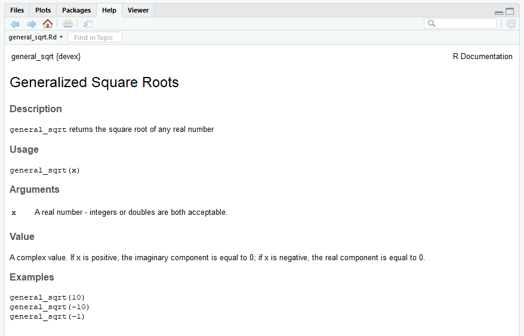
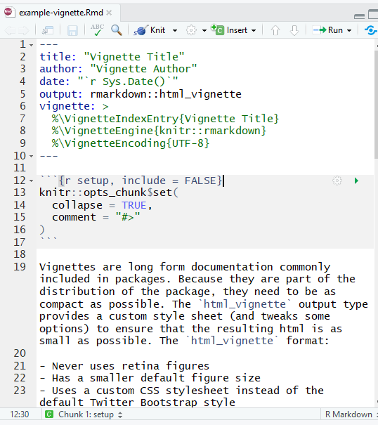
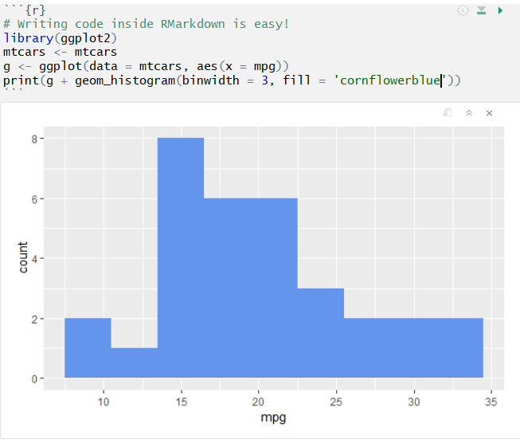

3 Documentation with Roxygen2
Documentation is an absolutely essential part of any package - most people won’t be willing to read your source code to figure out how your functions work. Thankfully, creating documentation for your package is incredibly easy with Roxygen2.
3.1 Documenting Functions
Note: here, we describe how to document functions. For a more detailed description of how to document S3, S4, and reference classes, check out this page.
Roxygen is an R package that includes templates and shortcuts for documenting packages. For shiny packages there is now golem. The devtools package is used for building and testing the functions you write and document with Roxygen templates.
To ensure that you have the correct files to build R packages with Roxygen the following aspects of an R package need to include references to the Roxgyen comments. These are:
3.1.1 DESCRIPTION
[notes coming]
3.2 Function comments
To understand how to use Roxygen2, it’s best to start with an example. Consider the following code, which generates the documentation for the general_sqrt() function above.
#' Generalized Square Roots
#'
#' \code{general_sqrt} returns the square root of any real number
#'
#' @param x A real number - integers or doubles are both acceptable.
#' @return A complex value. If x is positive, the imaginary component is equal to 0;
#' if x is negative, the real component is equal to 0.
#'
#' @examples
#' general_sqrt(10)
#' general_sqrt(-10)
#' general_sqrt(-1)
#'
#' @export
# This function takes the complex square root of real numbers
general_sqrt <- function (x) {
# Return the normal square root if x > 0
if (x > 0 || x == 0) {
return(complex(real=sqrt(x), imaginary=0))
}
# Else return the complex square root
else {
return(complex(real = 0, imaginary = sqrt(-x)))
}
}
Inside the R script, the documentation appears right above the definition of the function - this is helpful because it will help you remember to keep your documentations/functions up to date with each other. Let’s work through how this documentation was generated.
Note that everything you write in
Roxygen2should be preceded by a #’ character combo. This signals to the R environment that you’re writing documentation, not code.You should start your documentation with a very short (2-4 word) title of the function. In the example given above, the
general_sqrt()function is titled “Generalized Square Roots.”You should describe your functions’ parameters using the ‘param’ signifier. This should succinctly describe the type (i.e. double, integer, character) of the parameter, as well as its function, as well as any potential default value.
You should document the type of output your function returns. Is it an integer, a dataframe, a matrix? Does it depend on the input? Your documentation should answer these questions!
You must provide examples of your function’s use. These are pretty critical, because a lot of programmers will just skip straight to the examples (and only look at the rest of the documentation if the examples are unclear).
You may choose to write ‘export’ at the end of your documentation block. You should only do this if you want other people to use the function that you’re exporting, because exporting it will make sure it shows up in the namespace, a document that makes sure your package works in combination with other packages. For example, if your package includes data labelled ‘lm’, the namespace will prevent errors when using that data in combination with the R stats package (which has a function called ‘lm’) and will not throw an error. The exact mechanics of the namespace are slightly beyond the scope of this guide, but thankfully
Roxygen2will automatically generate a namespace for you when you create documentation with “export” tags.
Note that most functions you write won’t be exported - for example, if you write a helper function like loss() which is only used in service of a larger function, it shouldn’t be exported (exporting too many functions ‘clutters’ the namespace).
Once you’ve written all your documentation, it’s fairly simple to check what it looks like. Simply run the following function:
devtools::document()which will automatically generate your documentation. Then, if you’ve documented a function, you can type ?function-name into the console, and the documentation should automatically pop up!
After documenting your package, you can also click the ‘/man’ folder to inspect the documentation html files Roxygen2 generates, but it probably won’t be more informative than simply typing ?function-name into the console.
3.3 Adding and Documenting Data
Sometimes, you’ll want to include data as part of your package, either to serve as an example for users or because your functions need it to work. This is totally optional - not all packages need to include data - but can be useful, so let’s walk through how to include (and document) data in your package. Note that there are at least two kinds of data you should think about including, but for both kinds of data, you should generally save them as ‘.rdata’ or ‘.rda’ files (which are the same thing).
3.3.1 rds, rdata and rda files
3.3.2 Roxygen data
3.3.3 Including data which should be available to users
All of the data you want to be available to users should be saved in a folder called ‘data’ inside your project. The way to do this is to write and run a script which loads your data into R and then uses the usethis function use_data() to save it to a path inside ‘data’. Even if you do not already have a folder called ‘data’ in your package, the use_data() function will make it for you. Note that for this to work, your working directory must be set to the package you’re writing, otherwise usethis won’t know where to put your data.
For example, when documenting the scalep() function, one might want to include data as an example of a way to use scalep(). To this end, we can use the built-in R dataset mtcars and include it in the package.
usethis::use_data(mtcars)In this way, you can include in your package any data you want, providing it has been stored in an R object. Data in your ‘data’ folder will effectively always be exported, so you always must document it. To document data, you should create an R Script in your ‘R’ directory called [‘data.R’] and use Roxygen2 to document the data similarly to the way you’d document a function. For example, one might document the aforementioned data in the following way:
#' Motor trend car road tests dataset
#'
#' This dataset lists the properties of 32 motorcars
#'
#' @format A dataframe with 32 rows and 11 columns.
#' \describe{
#' \item{mpg}{Mile per gallon}
#' \item{cyl}{Number of cylinders}
#' \item{disp}{Displacement (cu.in)}
#' \item{hp}{Gross horsepower}
#' \item{drat}{Rear axle ratio}
#' \item{wt}{Weight (1000 lbs)}
#' \item{qsec}{1/4 mile time}
#' \item{vs}{Engine: (0 = V-shaped, 1 = straight)}
#' \item{am}{Transmission: (0 = automatic, 1 = manual)}
#' \item{gear}{Number of forward gears}
#' \item{carb}{Number of carburetors}
#'}
#' @source This dataset is a built-in R dataset and is
#' intended only to be used as an example for package development.
"mtcars"This should all look pretty similar to documenting functions. Note that ‘format’ is a tag which will allow you to describe the structure of a dataset, and it’s good practice to list what each column measures in this section. The ‘source’ section describes where the data came from. Never write ‘export’ in this section, as data here is already automatically exported.
3.3.4 Including data for your functions
Some functions may rely on a large, predefined set of coefficients or other inputs which need to be included in the package. However, users shouldn’t generally have access to such data because otherwise they might accidentally radically change the way your function works. It’s best to put such data in ‘R/sysdata.rda’, because then users won’t easily be able to access and accidentally modify it. As before, the way to include data in this way is to write a script which loads the data into R and then use the use_data() function to save it, but you should also include a parameter internal = TRUE in the function call to let R know that this is interior, not exterior, data. For example, if a function depends on a matrix called “coefficients”, one might run the following code:
coefficients <- read.csv('Users/name/Documents/R/coefs.csv')
usethis::use_data(coefficients, internal = TRUE)Data in ‘R/sysdata.rda’ is never exported, so there’s no need to document it.
3.4 README
The README file is a bit different than the others, because your package will actually work fine even if you don’t have one. However, if you want other people to use your package, it’s best to have a README. The purpose of a README is basically to bridge the gap between the DESCRIPTION and the actual documentation in your package. In other words, someone using your package might know what it does in a general sense from your DESCRIPTION, but they won’t necessarily know exactly how to set up the package or how to use specific functions. The README takes care of that. In general, README’s should do at least two things, with a couple of optional ones:
(Important):
- Offer a longer (one to three paragraph) description of the package, including core functions and bits and pieces of syntax
- Help users install and set up the package
(Optional from here on):
Tell developers what to do if they want to contribute to your package
Help contributors figure out how to run the packages’ unit tests (we’ll talk more about unit tests in the next section)
Offer some acknowledgements
This template README is a good starting point.
#include gist here...You could copy this file into your package directory and modify it to reflect the content of your project. Again, because your package will technically function without your README, the actual structure and content of a README can be flexible. However, just remember that if you don’t have a README which outlines why and how to use your package, other developers are unlikely to want to use it.
3.5 Vignettes
Documentation is useful, but not necessarily a comprehensive guide to your package. You may want to include details about your implementation, extra examples, and more organization than your documentation provides, which is exactly what vignettes are for.
Vignettes are basically articles which motivate and describe your packages. They are generally written in RMarkdown, which allows you to mix code, mathematical equations, and formatted text with ease. If you are using RStudio, then writing vignettes will be very easy, because RMarkdown works automatically with RStudio. On the other hand, if you don’t have RStudio, you will need to (i) run the ‘install.packages(“rmarkdown”)’ command, and (ii) install pandoc.
To write a vignette, start by running the use_vignette() function from the usethis package:
usethis::use_vignette('vignette-name')This function will create a ‘vignettes’ subdirectory and populate it with a file based on the name you specified. The file should look something like this:

The top of the file, between the two lines of dashes, is written in the YAML language. It’s simply a convenient way to specify metadata about a vignette, and you should fill in the title and author fields.
The rest of the vignette should be written in RMarkdown, which is basically a mix of Markdown, Latex, or code. The vignette template generated by usethis is itself a guide to using RMarkdown, so we won’t dive too deep into using RMarkdown. However, there are a couple of core things you should know:
By default, text in RMarkdown files is assumed to be written in pandoc’s flavor of Markdown.
If you would like to include inline equations, you can do so by surrounding math symbols with a single dollar sign on each end. If you’d like to give an equation its own line, you can use two dollar signs on each end of the equations.
Including math is easy in RMarkdown
- You can add chunks of R code (and even other languages!) to your Vignette file by wrapping R code in “```” symbols, as demonstrated below:

Once you’ve modified your vignette, you can knit it into a beautiful HTML document by running the following function in the console:
rmarkdown::render('path/to/rmarkdown/file.Rmd')If you do choose to write vignettes, remember that it’s critical to motivate why you wrote your package in the first place. Additionally, you should structure the vignette so that it gives users an impression of the overarching structure of the package itself (i.e. group and organize your functions!).
3.6 Releasing Your Package
You’re almost done at this point! You’ve written your functions, modified the description, documented your functions, presumably exported some of them, and hopefully tested all of them; you’re now ready to release and publicize your package. There are basically two main ways to do this.
3.6.1 Pushing to GitHub
Because of the way we have set up this project the easiest way to publish your package is to simply push it to GitHub, (we’ll discuss how to do this later). The pros of this approach are that it makes it very easy for users to download your package - they can literally do it in one line. Additionally, Github offers free services to host a website for your package and its documentation, and most importantly, it’s very easy for you to publish your package this way. Thus, pushing to Github is sort of the “default” way to publish a smaller package.
3.6.2 CRAN
On the other hand, if you’ve written a larger package which you would like to distribute to the entire R community, you might consider submitting it to CRAN, the Comprehensive R Archive Network. CRAN is basically the official package authority designated by the R community, and successfully adding your package to CRAN will make it more legitimate as well as easier for R users to find and install.
Logistically, submitting your package to CRAN is pretty simple. The first step is to build your package, which means bundling it into a format that is easy to distribute and easy for users to install.
The best way to build your package is to zip it as a .tar.gz file. devtools will do this for you if you run the following command:
devtools::build(binary = FALSE)and then you should see a tar.gz file pop up just outside your working directory.
The next step is to submit the bundled file to CRAN at the link here, along with a couple of comments. Although this seems pretty simple, in actuality, CRAN has very high standards for packages, so it can be rather tricky to get a package accepted. CRAN’s specific standards are beyond the scope of the current iteration of this guide, but if you decide you want to publish a package on CRAN, you should read Hadley Wickham’s advice on the subject very carefully.
3.6.2.1 Optional: Building precompiled binaries
tar.gz files are useful because anyone who has a working R development environment can install and unzip your package, regardless of their operating system. However, you do need a development environment to install packages built as tar.gz files, and some users (in particular on Windows) may not have development environments set up yet. To address this potential issue, another way to build your package is as a precompiled binary file. Precompiled binaries are useful because unlike tar.gz files, they do not require a development environment to install. However, they are platform specific: a precompiled binary built by a Windows machine can’t be installed on Mac machine. Although tar.gz files are much more common, if you do want to build a binary, you can just change an argument of devtools::build():
devtools::build(binary = TRUE)and your precompiled binary will be built.
3.6.3 Publicizing
Once you’ve released your package either on Github or perhaps on CRAN, you should publicize it! You can of course publicize it any way you choose, but there are at least two things you should consider doing.
- Tweet about your package using the #rstats hashtag, which reaches a substantial portion of the R community.
- You may also want to send an email out to the R-Packages email list.
And that’s it!
3.7 Tips and Tricks
First, there’s a wonderful cheat sheet for package development linked here.
Second, if you’re having trouble, you can always just reference stackoverflow.